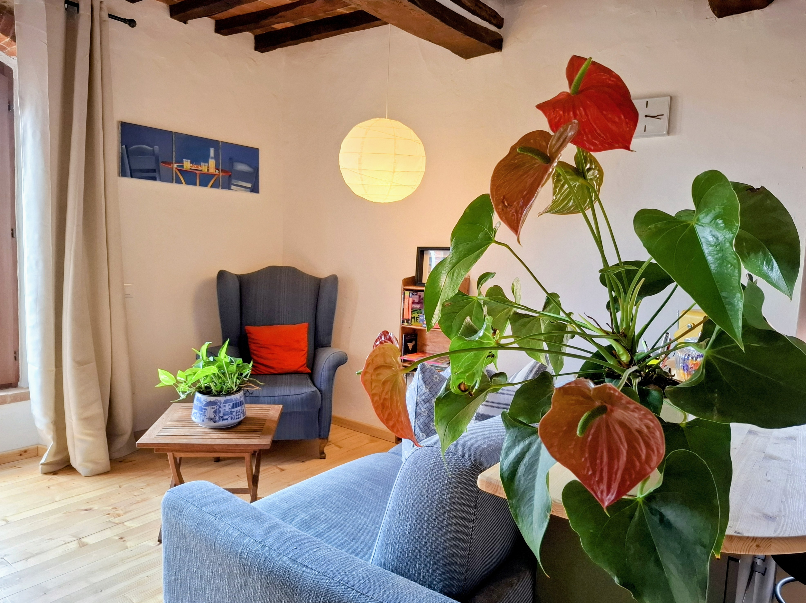
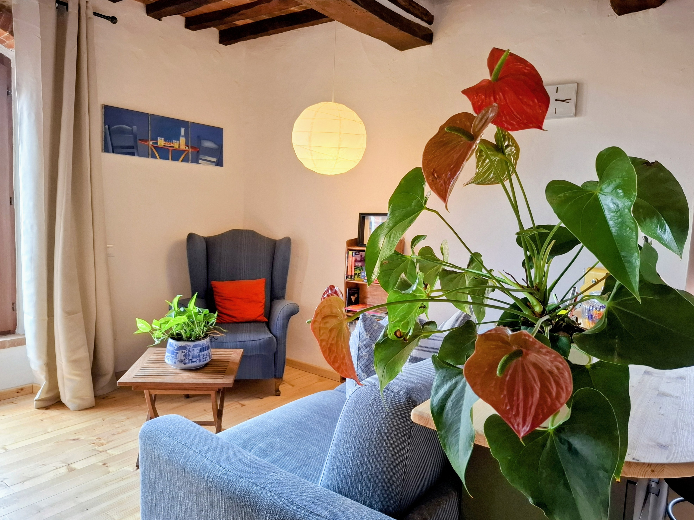
The Restoration
The House has been completely restored in 2024. As we did the majority of the work ourselves, we have tried our best to use local and traditional methods throughout the restoration. This includes using lime and chalk for plastering, painting and brick work. Each bathroom has been newly constructed using Hemp Lime bricks and the walls/floors finished whit "pastellone". This material and building technique is an ancient one, already used in Roman times which finds its maximum expression in the sixteenth-century Venice, as the forerunner of the venetian "terrazzo" Check out our Youtube channel to see the entire restoration. Link below.
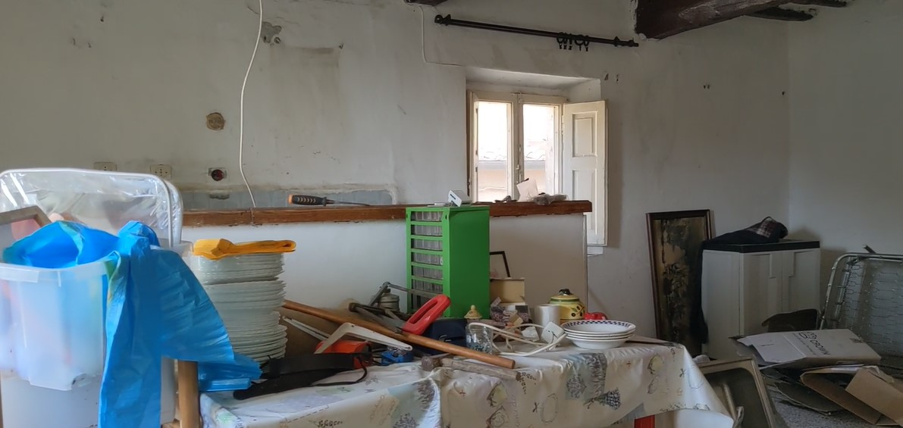
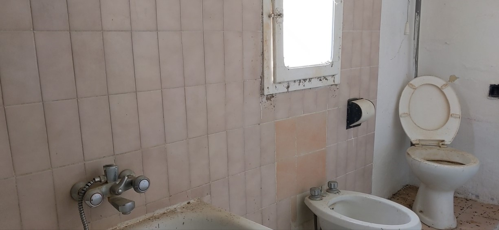
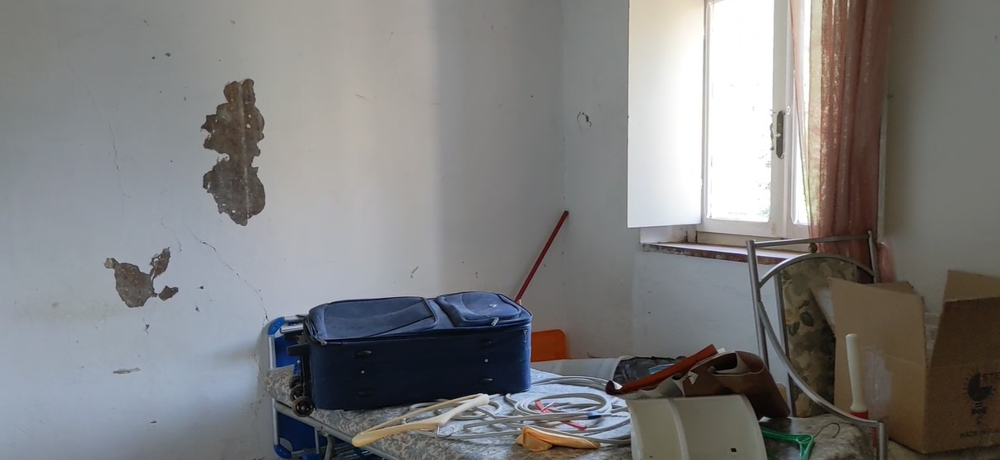
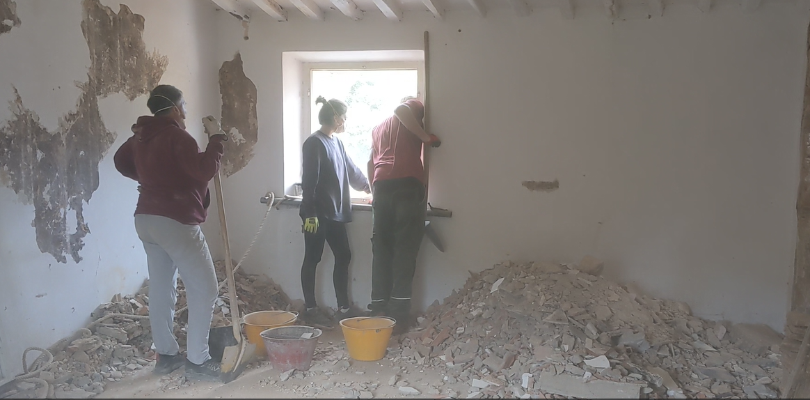
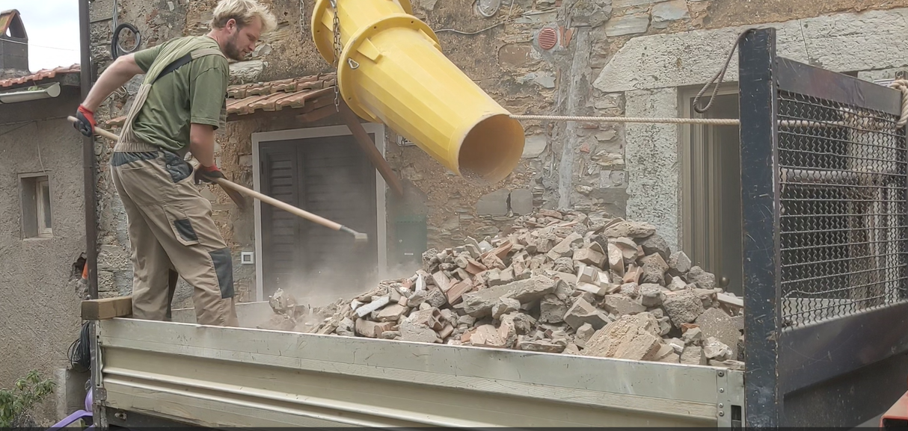
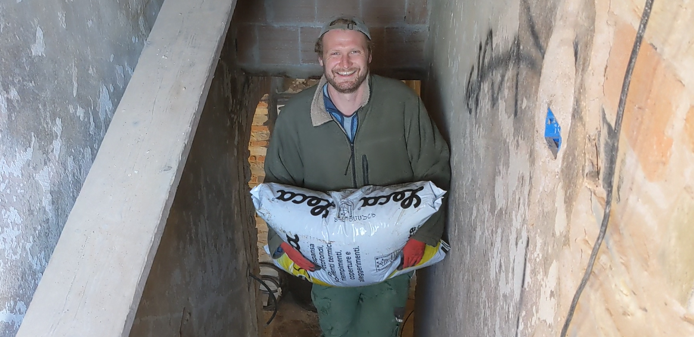
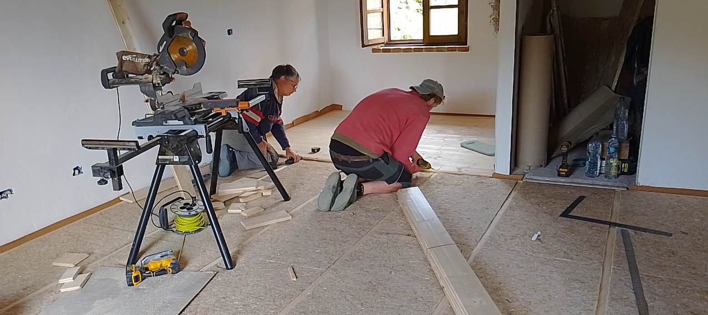
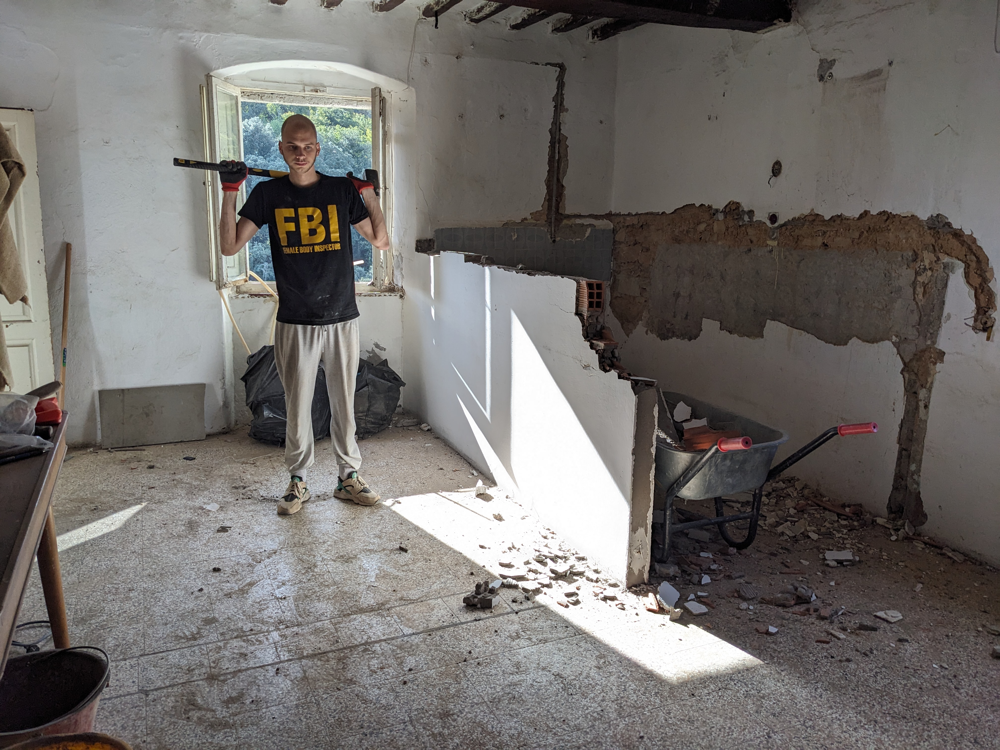
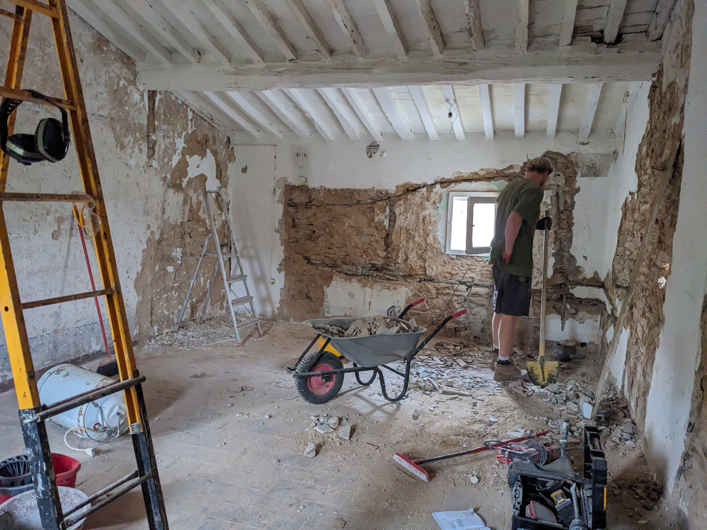